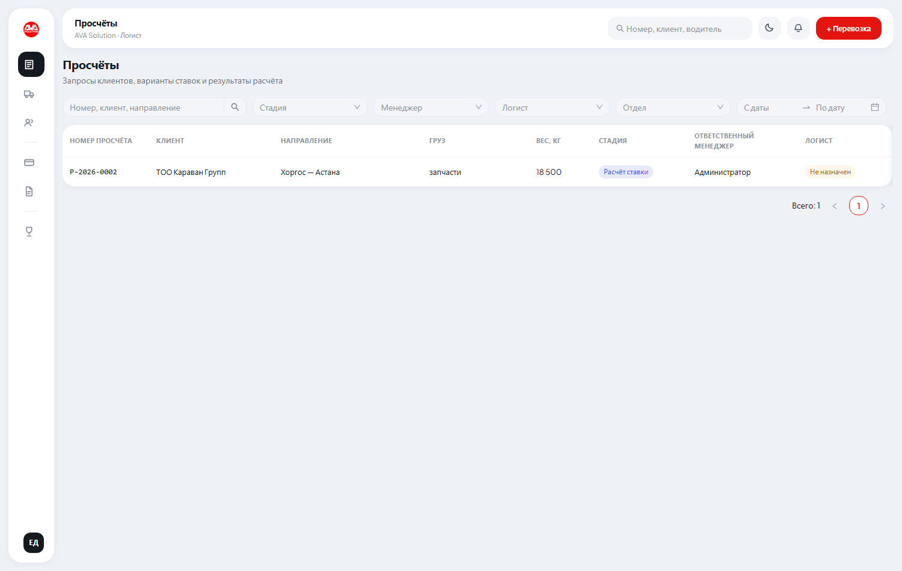
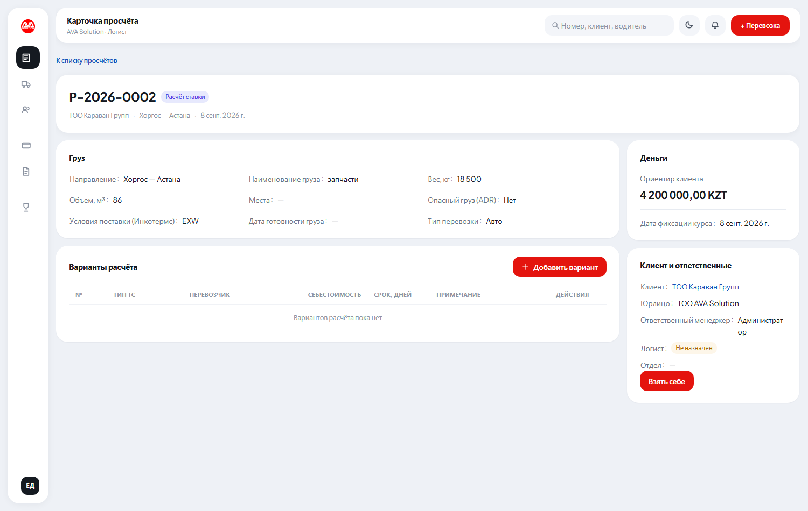
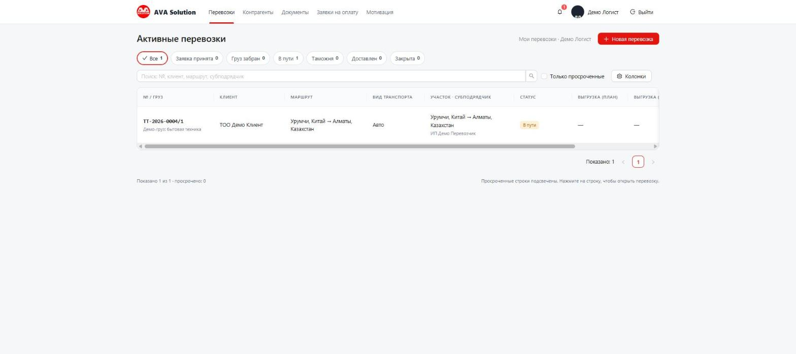
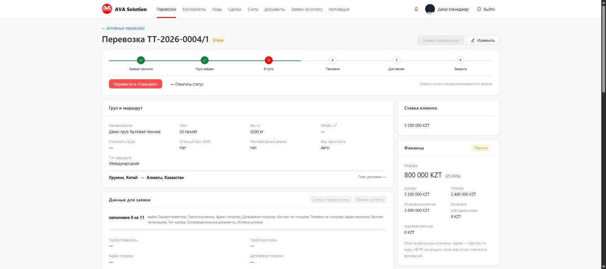
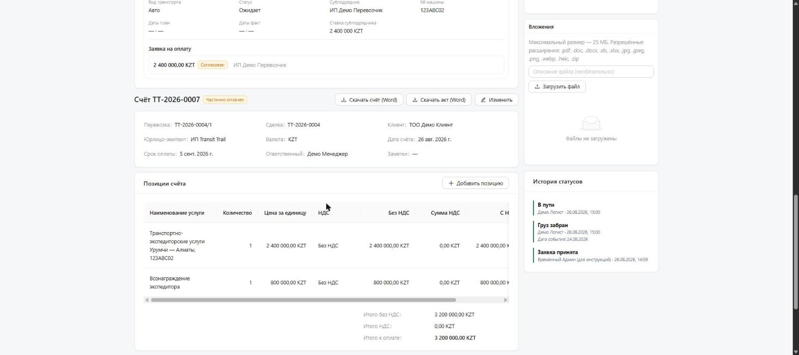

Вы считаете ставки по запросам клиентов и ведёте перевозку от «Заявка принята» до «Закрыта»: следите за статусом, заполняете данные для транспортных заявок и оформляете оплату перевозчикам.
Работа начинается здесь, ещё до перевозки. Менеджер завёл запрос клиента, теперь нужно посчитать, за сколько мы сможем его везти.
В списке вы видите свои просчёты и свободные — те, где логист ещё не назначен.
Они помечены «Не назначен». Чтобы отобрать только их, выберите в фильтре «Логист» пункт
Не назначен. Свободные показываются в пределах вашего отдела.

Откройте свободный просчёт и нажмите Взять себе — вы станете его логистом.
Если кто-то из коллег успел раньше, система об этом скажет и заявка останется за ним.
Менеджер также может назначить вас сам — тогда просчёт появится у вас без всяких действий.

Кнопка Добавить вариант. В каждом варианте укажите тип ТС, перевозчика,
себестоимость (сколько просит перевозчик) и срок доставки. Вариантов можно сделать
несколько — например, тент и рефрижератор или два разных перевозчика; менеджер покажет их
клиенту и тот выберет.
Ориентируйтесь на «Ориентир клиента» в блоке «Деньги» — это сумма, которую назвал сам клиент. Она подсказывает, в какой бюджет надо уложиться при поиске машины.
Ставку, которую мы в итоге выставим клиенту, вы не видите и не заполняете — это дело менеджера.
Исход («Прошли» или «Не прошли») отмечает менеджер — у вас этих кнопок нет. Если клиент согласился, просчёт сам превратится в перевозку: она получит номер, а участок маршрута с вашим перевозчиком и себестоимостью создастся автоматически. Дальше вы ведёте её как обычную перевозку — со следующего шага.
Главный экран после входа. Вкладки сверху фильтруют по статусу, есть поиск по номеру, клиенту, маршруту и субподрядчику, а также фильтр «Только просроченные».

Шесть статусов: Заявка принята → Груз забран → В пути → Таможня → Доставлен → Закрыта. Переход возможен только на следующий статус по порядку (пропустить нельзя), откатить назад — можно. Для «Груз забран» и «Доставлен» обязательно указать дату события — она не может быть в будущем.

Ниже в карточке — блок «Данные для заявки» (грузоотправитель, грузополучатель, адреса,
контакты, тип кузова). Счётчик показывает, сколько полей уже заполнено. Кнопка
Заявка перевозчику собирает готовый документ по этим данным.
Если груз едёт несколькими перевозчиками (например, Китай → граница одним, дальше другим) —
кнопка Разбить на участки у блока «Перевозчик». У каждого участка — свой субподрядчик,
ставка, машина и водитель.
Внутри карточки участка — кнопка создания заявки на оплату. Вы создаёте заявку, но согласовать и отметить оплаченной может только руководитель или финансист — статус пройдёт путь Заявлен → Согласован → Оплачен.
